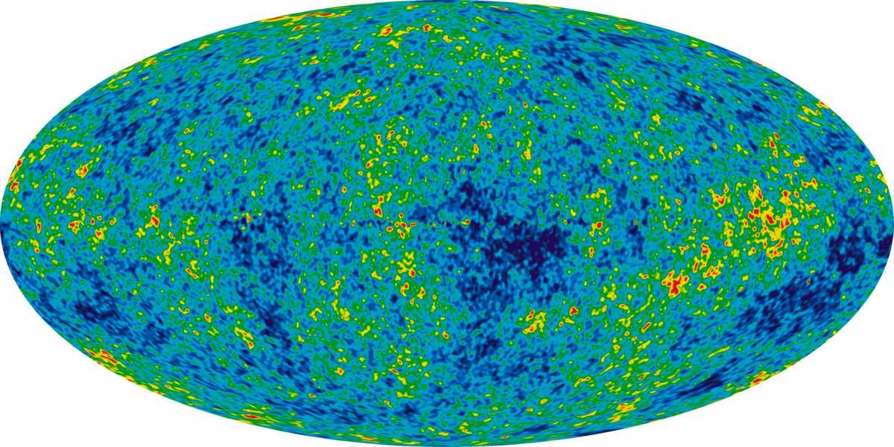
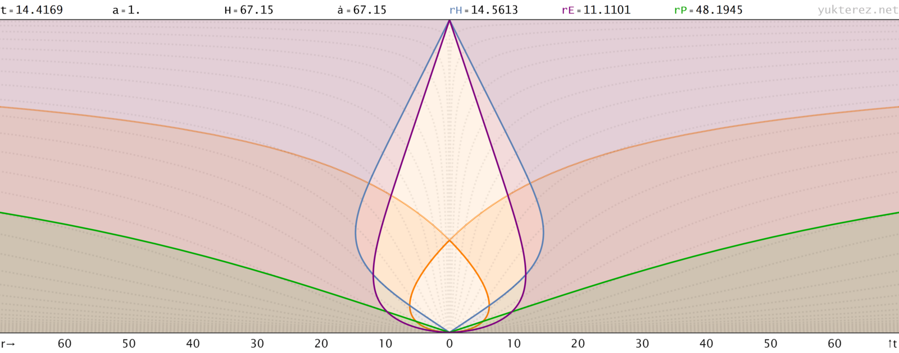

The question of how the universe will end has intrigued scientists and philosophers for centuries.
Modern physics presents several compelling theories, each rooted in observations of cosmic phenomena
and fundamental physical laws. Among these, the most widely discussed are the Big Crunch, Heat Death,
Big Rip, and the idea of Cosmic Rebirth. Each theory paints a different picture of the universe's ultimate demise,
reflecting our evolving understanding of space, time, and matter.
This article explores these theories in depth, incorporating key scientific principles and speculative concepts,
while noting a preference for the Big Crunch theory, as it elegantly aligns with Newton's Third Law:
"For every action, there is an equal and opposite reaction."
The Big Crunch: A Universe in Reverse
Image credit: Wikimedia Commons
The Big Crunch posits that the universe's expansion, driven by the Big Bang, will eventually reverse.
This scenario assumes that the gravitational pull of matter in the universe is strong enough to overcome
the accelerating expansion caused by dark energy. Over time, galaxies would slow down, reverse direction,
and begin to contract. This contraction would culminate in an immensely dense and hot state, mirroring the
conditions of the Big Bang but in reverse.
Key Features:
- Gravitational Collapse: If the density of the universe exceeds a critical threshold (critical density), gravity would dominate, causing a gradual contraction.
- Thermal Reversal: As the universe contracts, the energy density and temperature would rise, potentially reigniting processes like nucleosynthesis and even star formation on a cosmic scale.
- Singularity at the End: Ultimately, the universe would collapse into a singularity, a point of infinite density and zero volume.
This theory resonates with Newton's Third Law: the outward expansion of the universe (action) is counterbalanced
by an inward gravitational pull (reaction). This symmetry appeals to those who see the cosmos as adhering
to elegant, balanced physical principles.
Heat Death: The Cold and Silent End

Image credit: Wikimedia Commons
The Heat Death theory, also known as the Big Freeze, envisions a universe that continues expanding indefinitely.
Over time, the energy density of the universe becomes increasingly diluted, and temperatures asymptotically
approach absolute zero. This scenario stems from the Second Law of Thermodynamics, which states that entropy—a
measure of disorder—always increases in an isolated system.
Key Features:
- Increasing Entropy: As stars burn out and black holes evaporate, the universe trends toward a state of maximum entropy.
- Starless Night: In the distant future, all stars will exhaust their nuclear fuel, leaving behind only remnants like white dwarfs, neutron stars, and black holes.
- Proton Decay: Theoretically, even protons—the building blocks of matter—could decay, leaving the universe devoid of recognizable matter.
- Cold Vacuum: Eventually, the universe would become a dark, cold, and lifeless expanse.
While the Heat Death scenario seems bleak, it aligns with observational evidence of an accelerating universe driven
by dark energy. The increasing separation of galaxies suggests a future where interactions between cosmic structures
become virtually impossible.
The Big Rip: A Catastrophic Tearing Apart

Image credit: Wikimedia Commons
The Big Rip proposes a dramatic end in which the accelerating expansion of the universe, driven by dark energy,
becomes so extreme that it tears apart all matter, from galaxies to atoms. This theory relies on the concept of phantom
energy, a hypothetical form of dark energy with an equation of state that causes the expansion rate to increase without limit.
Key Features:
- Exponential Expansion: Over time, the repulsive force of dark energy would overcome all gravitational and electromagnetic forces.
- Cosmic Disintegration: Galaxies, solar systems, planets, and even atoms would be torn apart as the expansion accelerates.
- Singularity at the End: The expansion rate would become infinite in a finite amount of time, resulting in a final singularity.
The Big Rip is one of the most extreme scenarios for the universe's demise. While observational evidence of accelerating
expansion supports the possibility of a Big Rip, the exact nature of dark energy remains unknown, leaving this theory speculative.
Cosmic Rebirth: A Cycle of Death and Renewal

Image credit: Wikimedia Commons
The concept of Cosmic Rebirth suggests that the universe's death is not the end but the beginning of a new cosmic cycle.
This idea is often associated with the Big Bounce, which posits that the universe undergoes periodic cycles of expansion
and contraction. After a Big Crunch, a new Big Bang could occur, giving rise to a new universe.
Key Features:
- Cyclic Cosmology: The universe alternates between phases of expansion and contraction, with each cycle erasing evidence of the previous one.
- Energy Conservation: The total energy of the universe remains constant, even as it transitions through different states.
- Quantum Gravity: In this framework, quantum effects near singularities prevent the formation of true infinities, allowing for a bounce rather than a definitive end.
Cosmic Rebirth offers a hopeful perspective, suggesting that the universe is an eternal entity capable of renewal.
This theory finds resonance in ancient philosophical traditions and modern theoretical physics, bridging the gap between
science and metaphysics.
Comparing the Theories
The four theories—Big Crunch, Heat Death, Big Rip, and Cosmic Rebirth—each present a unique view of the universe's fate.
The Big Crunch offers a return to the singularity, the Heat Death predicts a cold, lifeless universe, the Big Rip foresees
cosmic disintegration, and Cosmic Rebirth envisions a cyclical universe. Each theory resonates with different aspects of
physics, from gravity to entropy to dark energy.
Personal Reflection: Why the Big Crunch Resonates
Among these theories, the Big Crunch stands out as a particularly elegant solution. It aligns with Newton's Third Law,
suggesting that the universe's outward expansion (action) is inevitably followed by an inward collapse (reaction).
This symmetry appeals to those who view the cosmos as governed by balanced, predictable physical laws.
The Big Crunch also offers a poetic perspective: the universe, born in a fiery explosion, would end in a similar fiery implosion,
completing a grand cosmic cycle. While observational data currently supports an accelerating universe, the possibility
of a future reversal cannot be ruled out, particularly if the nature of dark energy changes over time.
Conclusion
The fate of the universe remains one of the greatest mysteries in science. The Big Crunch, Heat Death, Big Rip, and Cosmic
Rebirth each offer compelling visions of cosmic destiny, shaped by our understanding of physics and the universe's
current behavior.
While current evidence leans toward the Heat Death or Big Rip scenarios, the dynamic and ever-evolving nature of science
leaves room for surprises. Regardless of which theory proves correct, contemplating the universe's ultimate fate invites
us to ponder our place in the cosmos and the transient nature of existence.